祛魅了，感觉可以把 Surface 卖掉了。
定点乘法运算
1.1 实现方法简述
-
完全软件实现：把乘法运算拆成若干加法移位的机器指令，摁算；
-
加法器+硬件辅助：利用加法器硬件电路和移位寄存器，设计硬件的扩展电路，实现乘法简化计算；
-
专用乘、除法器实现：采用专用硬件电路实现高速乘、除法部件，多快好省地完成乘、除法运算；
1.2 原码の一位乘法运算
第一步：令 表示两操作数的原码，其中 表示其符号位：
则有： ；即符号位是二者符号位的亦或，问题便转化为了两者绝对值的乘积。
第二步： 二进制小数乘法，还就是那个相乘移位再相加的小学算术，甚至比十进制还简单（因为只有 +x 或 +0 两种情况，对应与门）
值得注意的是，二进制小数乘法中由于内存有限，可能存在 精度舍弃 的问题，不论是定点乘法还是浮点乘法。
以下是一个四位定点小数的乘法例子： ;
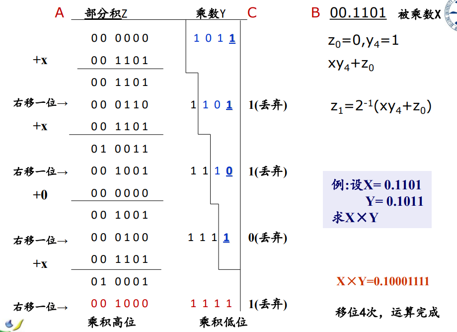
第三步： 设计硬件电路。简单来讲就是对于每一位算出部分积，移位后加到对应的乘积 中；右边的计数器判断是否算了 m 次（即 Y 的位数）。
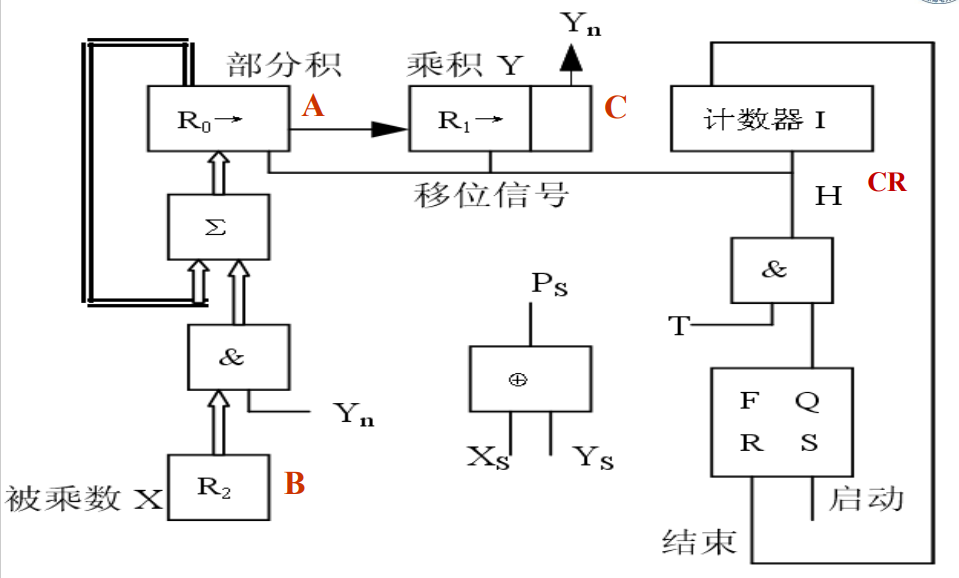
1.3 无符号 の 阵列乘法器
如果能 并行地 计算出每一位的值，则可以大大加速乘法的速度。
因此，我们考虑用空间换时间：搞 n*n 个与门算出两两数位对应的值，再将其相加得到对应位置最终的值：
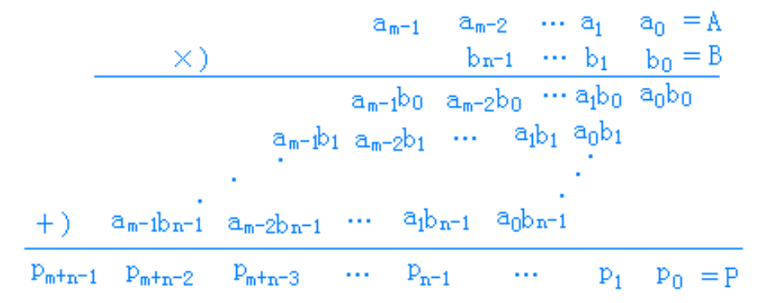
对应的电路逻辑图如下，包含 个全加器以及 个与门；
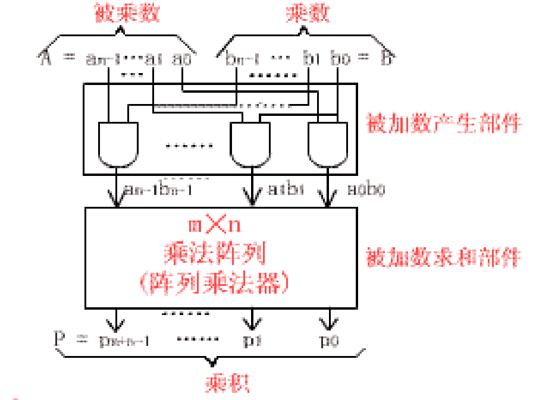
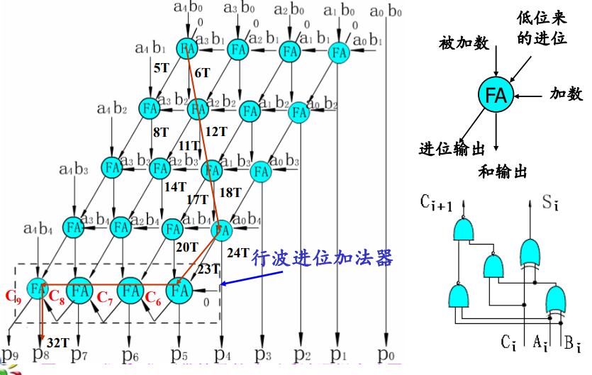
找到最长的关键路径（如上图红线），则其对应的时间估算为：
t_m &=& T_a + (n-1)*6T + (n-1)*T_f \\&=& T+(n-1)*6T+(n-1)*2T \\&=& (8n-7)T
其中， 是计算两两与计算的结果（并行，而 是全加器的进位延迟。
1.4 有符号数 の 阵列乘法
由于有符号数在机器中用补码表示，符号求补的阵 列乘法器的运算方法为：
- 正数：尾数参加无符号数乘法器运算
- 负数：将补码求其绝对值后 参加无符号数乘法器运算
- 符号：符号位通过异或门得到乘积的符号
- 若乘积为负数，需将乘积的绝对值经过求补电路 得到积的补码
求补电路逻辑 ：
一共需要三个求补器：两个 n 位算前求补器，以及一个 2n 位算后求补器；
经观察可知，求补的逻辑是从右到左找到第一个非 0 位，将其左边的所有位翻转即可（居然是真的）。据此设计以下电路：
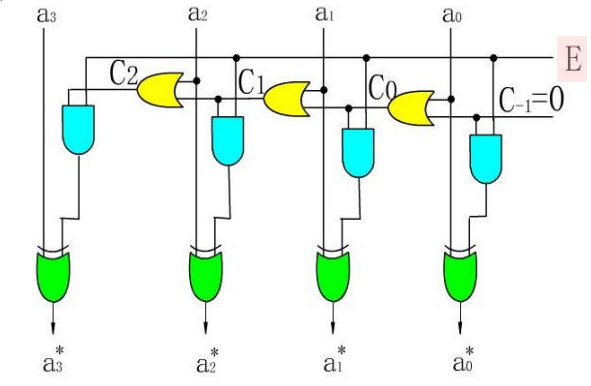
定点除法运算
1.1 手工除法运算
类比乘法，除法其实就是相除移位再相减的过程。
- 被除数小于除数时，商 0，并向右移 1 位；
- 被出示大于除数时，商 1，减去除数并右移 1 位；
然而，在判断够不够减的过程中，机器一眼看不出来，必须通过做减法看标记码的方式判断：若余数为负则不够减，此时必须恢复为原来的余数，继续以下计算；
但这种方法的步数不固定（恢复的时候还得加上原除数，很麻烦），因此实际中采用不恢复余数法，即 加减交替法，在下一位计算中蕴含出恢复余数的步骤：
-
若余数 ，则商 1 并使其 左移减除数 ，对应的是：
$ r_i = r_i^
~;~r_{i+1} = 2r_i^-y$ -
若余数 ，则商 0 并使其 左移加除数 ，对应的是：
$ r_i = r_i^
-y~;~r_{i+1} = 2r_i^-y=2r_i+y$
1.2 并行除法器
早期计算机中，为了简化结构，硬件除法器的设计采用串行的1位除法方案。即多次执行 “减法-移位” 操作来实现，并使用计数器来控制移位次数。
- 但是由于串行除法器速度太慢，目前已被并行的除法器淘汰。
- 和阵列乘法器相似，阵列除法器也是一种并行运算部件，采用大规模集成电路制造。不仅简化电路，而且速度快。
- 阵列除法器有多种形式，如不恢复余数阵列除法器、补码阵列除法器等。这里以不恢复余数阵列除法器为例，来说明这类除法器的组成原理。
1.2.1 可控加法/减法单元（CAS）
在介绍 不恢复余数阵列除法器 以前，首先介绍可控加法/减法(CAS) 单元，因为它将被采用于下面所介绍的除法流水逻辑阵列中。
首先看下图可知，他有四个 Input 和 Output 端，对应功能如下：
- 当 时， CAS 对应执行加法/减法运算
- ，计算该位的结果
- ，对应的加法进位 or 减法借位
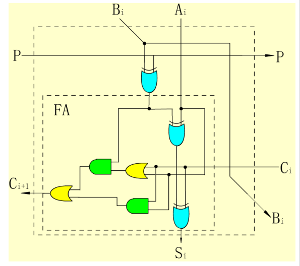
1.2.2 不恢复余数阵列除法器
本质上就是加减交替法的并行模式，下图各行执行一个数位上的加减交替：
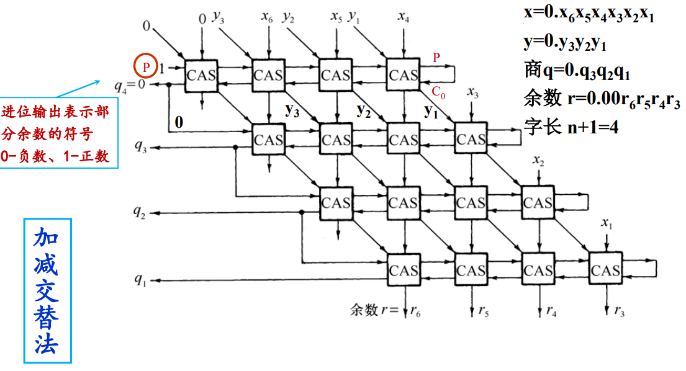
对不恢复余数阵列除法器来说，在进行运算时，沿着每一行都有进位 (或借位) 传播，因此所有行在它们的进位链上都是 串行连接 。而每个 CAS 单元的延迟时间为 3T 单元。
因此，对一个 2n 位除以 n 位的除法器，考虑 CAS 单元数量为 的信号延迟，其除法执行时间为：
浮点数表示及其运算
3.1 浮点数的 IEEE754
-
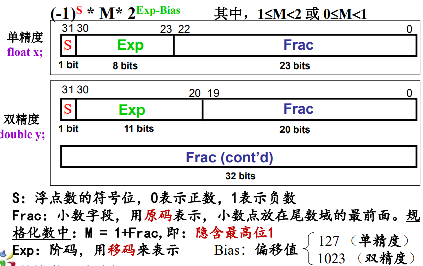
-
移码：在真正的阶 e 上加一个规定的值（Bias）
-
数值范围：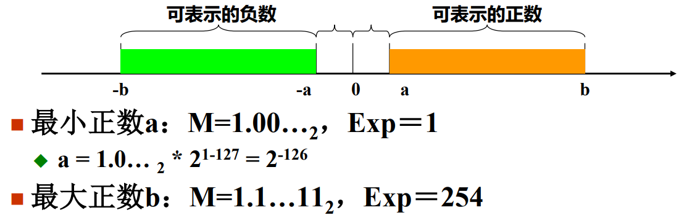
-
特殊值（消失的 0 & 255）：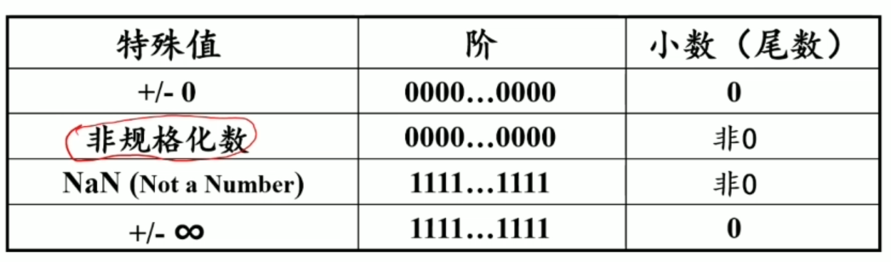
-
非规格化数（表示 0~1 范围内的数），Exp = 0 ；
-
M=Frac，没有隐含的前导 1；
-
e(阶) = 1 - Bias = 1 – 127 = -126，而非 0-127，此时表示的最小浮点数为 （出于 平滑过渡 的考虑）
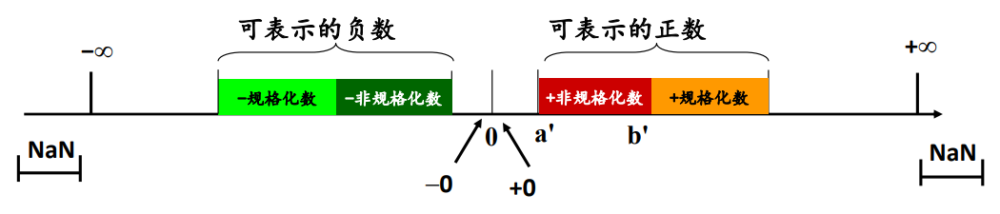
-
3.2 浮点数加减法
设两个浮点数： ，则二者的和或差可以表示为：
这其实也是小学的时候教过的一套算法：
-
对阶，求阶差。 本质上就是 小数点对齐 ，使阶码小的数的尾数右移 位，阶码取较大的阶码值；
在对阶的过程中，难免会造成精度的损失，但是 小阶对大阶 保证了精度损失可以控制在最小范围；
-
对对齐后的尾数进行加、减运算，并进行规格化（包括阶码上溢或下溢的处理）；
左规 ：当 M 为原码时，结果的格式应为
x.1xxx；而当尾数为补码时，应使尾数不断左移，直至尾数的最高位和符号位 相反（考虑定点数的补码，最高位全是 1 的情况是没有意义的）！右规 ：若尾数求和的结果为
01.xxx或10.xxx，应将运算结果右移以实现规格化表示，同时阶码加一； -
舍入（可能再次规格化）以及溢出判断：
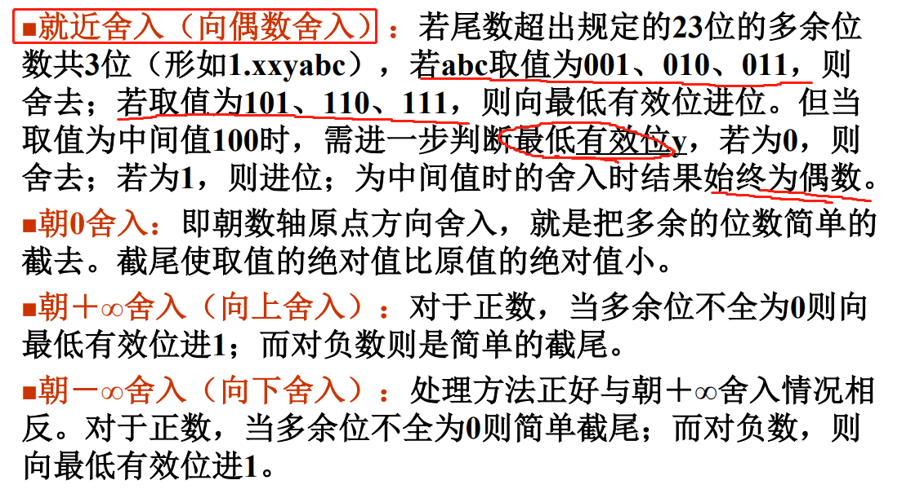
溢出判断：
- 阶码上溢，超过阶码能表示的最大正指数值，一般将其认为是 和 .
- 阶码下溢，超过阶码能表示的最小负指数值，一般将其认为是 0 .
- 尾数上溢，两个同符号位的数相加，产生最高位的进位，需要将尾数右移，阶码加 1 .
- 尾数下溢，尾数右移会使有效数字从最右端流出，最终导致尾数变为 0 .
3.3 浮点数乘除法
设有两个浮点数 ，则浮点数乘除法由小学算术可知：
算法描述如下：
- 检查操作数是否为 0；
- 阶码进行加、减操作，尾数进行乘除操作；
- 结果规格化，溢出（尾数）处理；
- 舍入处理，并重新规格化；
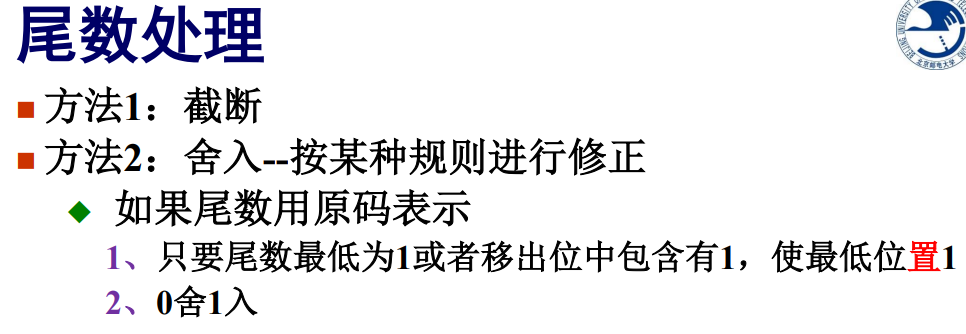
3.4 拓展：浮点数加减法的流水线？
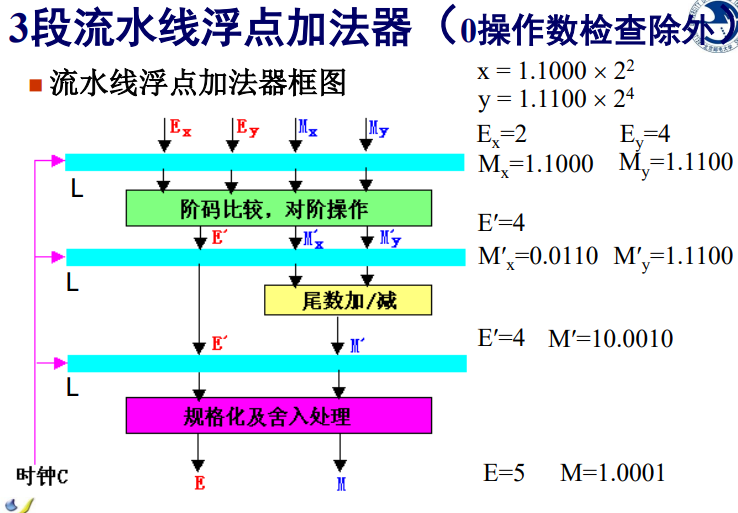